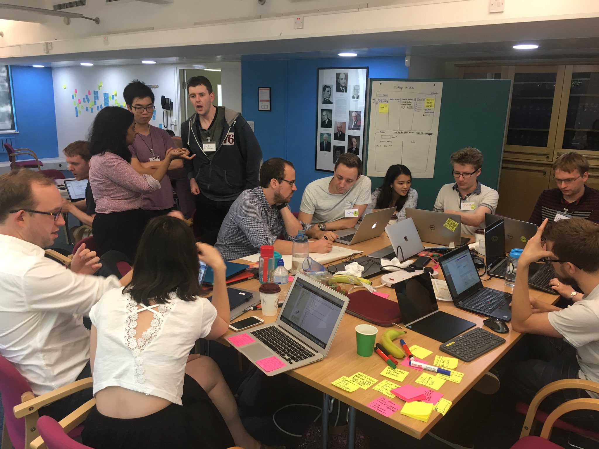
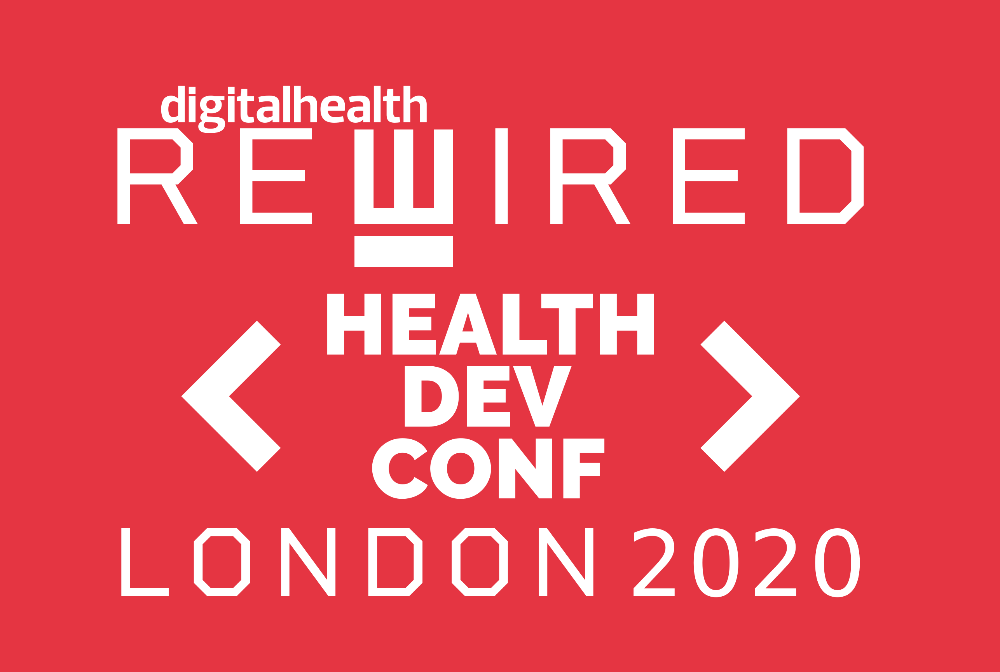
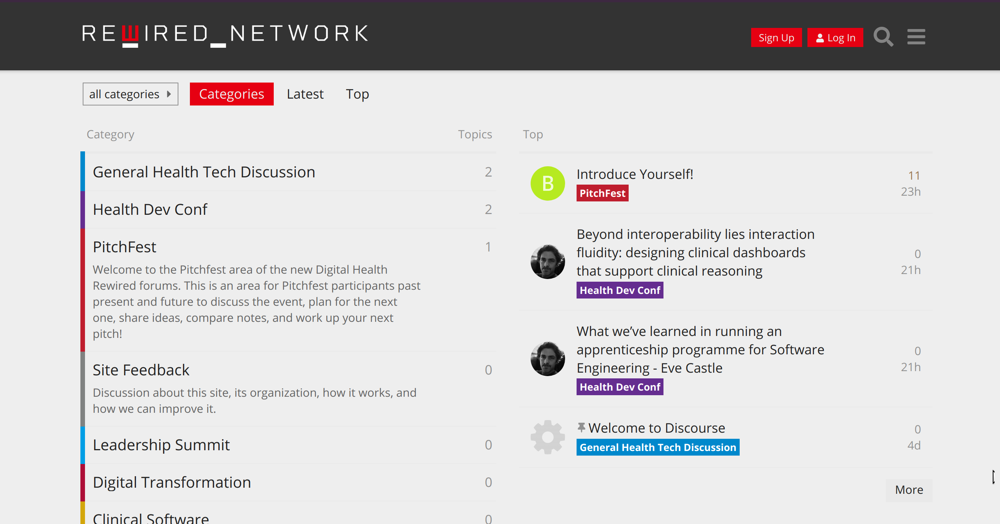

1st ever uk health dev conf
yes, dev conf
WHY?
nhs hack day
yes, stickers
no, planned fires
yes, jobs and notice board
yes, brand new forum!
forum.digitalhealthrewired.com
"schedule"
morning presentation sessions
| 0955-1030 | Eve Castle | What we’ve learned in running an apprenticeship programme for Software Engineering |
| 1030-1100 | Dave Pao | Beyond interoperability lies interaction fluidity: designing clinical dashboards that support clinical reasoning |
| 1100-1130 | Matthew Lamb | ‘How can I Integrate with the NHS App?’ – The NHS App delivery team |
| 1130-1200 | Dr Marcus Baw | Open Source - the WHY: 'Open Source is the Only Way for Medicine' and the HOW: 'How to open source my App and still have a business' |
| 1200-1230 | David Miller, CEO Open Health Care UK | The OPAL Framework - a rapid app development framework for healthcare |
| 1230-1300 | Medicalchain | (cancelled) |
morning workshop sessions
| 1000-1100 | Laurence Pakenham-Smith | Getting Started with a generic FHIR Server |
| 1100-1200 | Ian McNicoll, Chair, OpenEHR Foundation | Getting started developing with an openEHR Clinical Data Repository |
| 1200-1300 | Chris King/Rand Whitmore/Luke Morton | Removing the gap - working with service design |
afternoon workshop sessions
| 1400 - 1500 | Chris Clarke and Joshua Chew | National Record Locator API |
| 1500 - 1600 | Darren Hutton, product owner and technical lead, NHS Login | Hands on with NHS login |
| 1600 - 1700 | Tony Heap, Product owner for API Management - NHS Digital | NHS Digital, API Management, PDS and FHIR |
afternoon presentation sessions
| 1400-1430 | Emma Back | Equal Care Co-op |
| 1430-1500 | Rebecca Jarratt, lead delivery manager, NHS Login | What is NHS login, and how do I get started? |
| 1500-1530 | GP Connect Team | GP Connect - how to connect to and use GP healthcare record data in your application |
| 1530-1600 | Tony Heap, Product owner for API Management | NHS Digital NHS Digital, API Management, PDS and FHIR |
| 1600-1630 | Tony Shannon | The Ripple Stack - making the case for coherent open source healthcare technology 'components' |
| 1630-1700 | Rob Tweed | Rewiring the Health IT Landscape with the QEWD HIT Platform |
| 1700-1710 | Dr Marcus Baw | apt-get install beer |